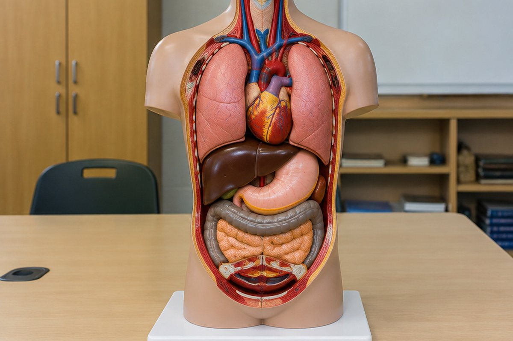

우리 몸은 어떻게 움직이고 살아갈까?

밥을 먹고, 숨을 쉬고, 달리기를 할 때 우리 몸속에서는 여러 기관이 함께 일하고 있어요. 어떤 기관들이 어떤 일을 할까요?
뼈와 근육 – 운동 기관
뼈는 몸의 형태를 만들고 몸을 지탱하며, 뇌·심장·폐 같은 몸속 기관을 보호해요.
근육은 뼈에 연결되어 있어요. 근육의 길이가 줄어들거나 늘어나면서 뼈를 움직이게 해요. 팔을 구부리면 팔 안쪽 근육이 줄어들면서 아래팔뼈가 올라와요.
갈비뼈는 새장처럼 심장과 폐를 감싸 보호해요.
소화 기관 – 음식물을 잘게 부숴요
음식물은 '입 → 식도 → 위 → 작은창자 → 큰창자 → 항문' 순서로 지나가요. 입에서는 이가 음식물을 잘게 부수고 침과 섞어요.
위는 위액으로 음식물을 더 잘게 쪼개고, 작은창자는 영양소와 물을 흡수해요. 큰창자는 남은 물을 흡수하고, 찌꺼기는 항문으로 나가요. 간, 쓸개, 이자는 소화를 도와요.
밥을 오래 씹으면 단맛이 나는 것은 침이 녹말을 소화하기 때문이에요.
호흡 기관과 순환 기관
숨을 들이마시면 공기가 '코 → 기관 → 기관지 → 폐'로 들어가요. 폐에서는 몸에 필요한 산소를 받아들이고, 몸에서 생긴 이산화 탄소를 내보내요.
심장은 펌프 작용으로 혈액을 온몸으로 보내요. 혈액은 혈관을 따라 돌면서 영양소와 산소를 온몸에 전해 주고, 다시 심장으로 돌아와요.
달리기를 하면 숨이 가빠지고 심장이 빨리 뛰는 것은 몸에 산소와 영양소가 더 많이 필요하기 때문이에요.
배설 기관 – 노폐물을 내보내요
몸속에서 영양소를 쓰고 나면 필요 없는 '노폐물'이 생겨요. 혈액 속 노폐물은 '콩팥'에서 걸러져 오줌이 돼요.
오줌은 방광에 모였다가 몸 밖으로 나가요. 콩팥은 강낭콩 모양으로 등 쪽 허리에 좌우 한 개씩 있어요.
물을 많이 마신 날 화장실에 자주 가는 것도 배설 기관이 일하기 때문이에요.
감각 기관과 자극의 전달
눈, 귀, 코, 혀, 피부 같은 감각 기관은 빛, 소리, 냄새, 맛, 온도 같은 자극을 받아들여요.
받아들인 자극은 신경을 통해 뇌로 전달되고, 뇌가 어떻게 행동할지 결정해 다시 신경을 통해 운동 기관에 명령을 보내요.
날아오는 공을 눈으로 보고 → 뇌가 판단하고 → 손을 뻗어 잡아요.
핵심 낱말
- 운동 기관
- 뼈와 근육처럼 몸을 움직이게 하는 기관
- 소화
- 음식물을 잘게 쪼개 흡수할 수 있게 만드는 것
- 호흡
- 산소를 받아들이고 이산화 탄소를 내보내는 것
- 순환
- 심장의 펌프 작용으로 혈액이 온몸을 도는 것
- 배설
- 몸속 노폐물을 몸 밖으로 내보내는 것
- 자극
- 감각 기관이 받아들이는 빛, 소리, 냄새 같은 신호
한 줄 정리
- 뼈와 근육은 몸을 지탱하고 움직이게 해요.
- 소화·호흡·순환·배설 기관이 함께 영양소와 산소를 얻고 노폐물을 내보내요.
- 감각 기관이 받은 자극은 신경을 통해 뇌로 전달되고, 뇌가 행동을 명령해요.
학교 교육과정 연결
- [6과04-01] 뼈와 근육의 생김새를 관찰하고 모형을 만들어 몸이 움직이는 원리를 설명할 수 있다.
- [6과04-02] 소화, 순환, 호흡, 배설 기관의 구조와 기능을 알아보고, 우리 몸의 여러 기관이 서로 관련되어 있음을 설명할 수 있다.